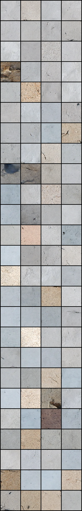

AIM
What this experiment was trying to learn
Train a DDPM that receives a binary crack-status label and generates separate cracked and non-cracked image sets.
TECH STACK
Implementation choices
PyTorch · conditional U-Net · class embedding · balanced sampler · AdamW · CUDA
PROCEDURE
How it was run
Reuse the processed SDNET2018 split, add a learned two-class embedding to the time embedding, use a balanced sampler, train for 50 epochs, generate 1,000 images for each condition, and evaluate each condition against the real validation protocol.
RESULT
What the evidence says
Cracked: FID 0.701002 · KID 0.556873 ± 0.202802 · LPIPS 0.425783. Non-cracked: FID 0.724640 · KID 0.756606 ± 0.389974 · LPIPS 0.416435.
OBSERVATIONS
What appeared in the outputs
Conditioning improved distribution similarity substantially under the chosen protocol. Visual inspection found crack-like patterns, but the crack-presence rate was not established with a validated evaluator.
ASSUMPTIONS
Decisions behind the result
The binary label is reliable enough to teach a first control signal; a balanced sampler prevents non-cracked samples from dominating; equal-size generated sets make the class comparison fair.
ERRORS & SOURCES OF ERROR
What could mislead us
The auxiliary crack classifier reached only 65.79% validation accuracy; metrics describe general similarity rather than crack correctness; a preliminary 5/16 visual count is not a final prevalence estimate.
CONCLUSION
Research takeaway
Binary conditioning is a meaningful improvement over the baseline, but it does not fully solve crack correctness or morphology control.
RESULT IMAGES
Generated outputs


FULL REPORT CONTENT
Technical record
Expand / collapse the original report
Experiment 2 - Conditional DDPM Formula Report Page 1 Experiment 2 Formula Report Crack-Status Conditional DDPM for Concrete Images This report documents the second concrete crack image generation experiment. Experiment 2 extends the unconditional DDPM baseline by adding a binary crack-status condition so the same model can be sampled as either cracked or non-cracked. Item Value Dataset SDNET2018 processed dataset from Experiment 1 Task Class-conditional concrete image generation Conditions class 0 = non_cracked, class 1 = cracked Resolution 64 x 64 RGB Model SmallUNet DDPM with learned two-class embedding Epochs 50 Diffusion steps 1000 Final checkpoint experiments\conditional_ddpm\checkpoints\conditional_epoch_050.pt Final loss approximately 0.015247
Experiment 2 - Conditional DDPM Formula Report Page 2 1. Aim and Motivation Experiment 1 could generate concrete-like images, but it could not be instructed to generate cracked or non-cracked samples. Experiment 2 addresses that limitation by adding a crack-status condition to the DDPM. Train a DDPM that receives an explicit binary crack-status condition. Generate separate cracked-condition and non-cracked-condition image sets. Compare conditional generation against the unconditional baseline. Measure general distribution similarity while clearly noting that crack correctness still needs visual or classifier-based evaluation. 2. Dataset Structure and Preprocessing 2.1 Dataset Used Experiment 2 reused the same processed SDNET2018 dataset as Experiment 1. Images were already indexed, split, converted to RGB, resized to 64 x 64, saved as PNG files, and normalized to [-1,1] during loading. Quantity Value Total indexed images 56,092 Training images 50,482 Validation images 5,610 Training cracked 7,636 Training non-cracked 42,846 Validation cracked 848 Validation non-cracked 4,762 2.2 Raw Dataset Meaning Raw folder Surface Class folder Condition label Class id D/CD bridge_deck CD cracked 1 D/UD bridge_deck UD non_cracked 0 P/CP pavement CP cracked 1 P/UP pavement UP non_cracked 0 W/CW wall CW cracked 1 W/UW wall UW non_cracked 0 Cracked images contain visible crack lines, fissures, or crack-like separations. Non-cracked images contain concrete texture without a visible crack, though they can still include roughness, aggregate, stains, pores, and illumination variation. The semantic difference between these classes is the reason conditional generation is needed. 2.3 Preprocessing Pipeline raw image -> RGB conversion -> 64 x 64 LANCZOS resize -> PNG uint8 pixel p in [0,255] ToTensor: p -> p / 255 in [0,1] Normalize(mean=0.5, std=0.5): x_0 = 2 * (p / 255) - 1 in [-1,1]
Experiment 2 - Conditional DDPM Formula Report Page 3 3. Conditional DDPM Theory 3.1 Unconditional vs Conditional Modeling The unconditional model estimates the image distribution without a control label. The conditional model estimates image generation under a class condition y. For this experiment, y is binary: y=0 means non-cracked and y=1 means cracked. The model learns a class embedding and adds it to the timestep embedding before the U-Net residual blocks. 3.2 Forward Diffusion The forward noising process is the same as Experiment 1. The condition is not used to add noise; it is used by the denoising model when predicting the noise. 3.3 Conditional Noise Prediction Objective The training target remains Gaussian noise prediction. The difference is that the U-Net now receives both the timestep and the class condition. 3.4 Conditional Sampling During sampling, the desired class label is fixed for the whole reverse process. Setting y=1 asks the model for cracked-condition samples; setting y=0 asks for non-cracked-condition samples.
Experiment 2 - Conditional DDPM Formula Report Page 4
Experiment 2 - Conditional DDPM Formula Report Page 5 4. Experimental Procedure Ord er Step Output 1 Reuse Experiment 1 processed SDNET2018 data data\processed\train.csv and validation.csv 2 Load labels and assign class ids non_cracked=0, cracked=1 3 Create weighted random sampler balanced cracked/non-cracked training batches 4 Train SmallUNet with num_classes=2 for 50 epochs checkpoints\conditional_epoch_050.pt 5 Generate cracked sample grids outputs\samples\cracked_epoch_050_seed_*.png 6 Generate non-cracked sample grids outputs\samples\non_cracked_epoch_050_seed_ *.png 7 Generate 1,000 cracked-condition eval images outputs\evaluation\conditional_cracked 8 Generate 1,000 non-cracked-condition eval images outputs\evaluation\conditional_non_cracked 9 Evaluate both generated sets FID, KID, paired LPIPS 4.1 Balanced Sampler The raw SDNET2018 training split is heavily imbalanced: non-cracked images are much more common than cracked images. The conditional training script uses a WeightedRandomSampler so cracked images are not overwhelmed. This does not change the stored dataset; it changes the probability that each training example is sampled during an epoch. The goal is to give the model enough cracked examples while still learning non-cracked texture. 4.2 Training Configuration Item Value Training script src\train_conditional.py Batch size 32 Learning rate 2e-4 Epochs 50 Optimizer AdamW Mixed precision CUDA AMP enabled when CUDA is available
Experiment 2 - Conditional DDPM Formula Report Page 6 Gradient clipping clip_grad_norm = 1.0 Model parameters 3,258,627 Additional parameters vs Experiment 1 512
Experiment 2 - Conditional DDPM Formula Report Page 7 5. Evaluation Metrics Experiment 2 uses the same general metrics as Experiment 1. These metrics evaluate distributional or perceptual similarity, not guaranteed crack correctness. 5.1 FID 5.2 KID 5.3 LPIPS 6. Results Condition FID KID mean KID std Paired LPIPS cracked 0.701002 0.556873 0.202802 0.425783 non_cracked 0.724640 0.756606 0.389974 0.416435 Both conditional sets scored much lower FID and KID than the unconditional baseline under the same evaluation procedure. This indicates stronger general distribution matching. It does not by itself prove reliable crack generation, because crack presence still requires visual annotation or a validated crack classifier. Experiment FID KID mean Paired LPIPS Experiment 1 unconditional 5.604571 3.419779 0.548679 Experiment 2 cracked condition 0.701002 0.556873 0.425783 Experiment 2 non-cracked condition 0.724640 0.756606 0.416435
Experiment 2 - Conditional DDPM Formula Report Page 8 7. Reference Generated Images 7.1 Cracked Condition Reference Grids cracked_epoch_050_seed_42.png cracked_epoch_050_seed_123.png 7.2 Non-Cracked Condition Reference Grids
Experiment 2 - Conditional DDPM Formula Report Page 9 non_cracked_epoch_050_seed_42.png non_cracked_epoch_050_seed_123.png
Experiment 2 - Conditional DDPM Formula Report Page 10 8. Observations and Limitations The conditional model achieved substantially better general metrics than the unconditional baseline. The learned two-class embedding allows separate cracked and non-cracked sampling commands. A preliminary visual check found about 5 visibly cracked samples out of 16 in one cracked-condition grid, but this is not a final crack-presence metric. The first auxiliary crack classifier reached only 65.79 percent validation accuracy, so automatic crack-presence evaluation is not yet reliable. FID, KID, and LPIPS must not be interpreted as proof that the cracked condition reliably generates real cracks. 9. Conclusion Experiment 2 successfully extends the DDPM baseline from unconditional concrete texture generation to binary crack-status conditional generation. It preserves the same 64 x 64 SDNET2018 setup but adds a learned class embedding, balanced class sampling, and separate cracked/non-cracked generation paths. The formal metrics improve strongly relative to Experiment 1, but a reliable crack-presence result remains pending. 10. Recommended Next Steps Create a manual visual audit CSV for representative cracked-condition and non-cracked-condition samples. Report visible crack rate, texture quality, and artifact rate separately for each condition. Train or validate a stronger crack classifier before using automatic crack-presence rates. Compare Experiment 2 against the 128 x 128 augmented Experiment 3 only after Experiment 3 evaluation is complete.